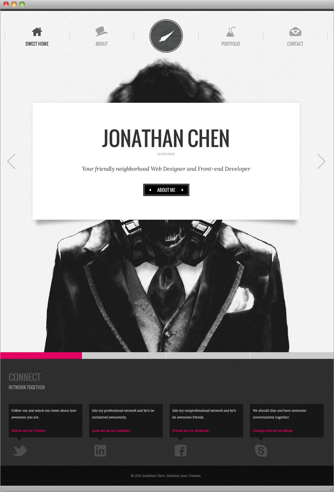
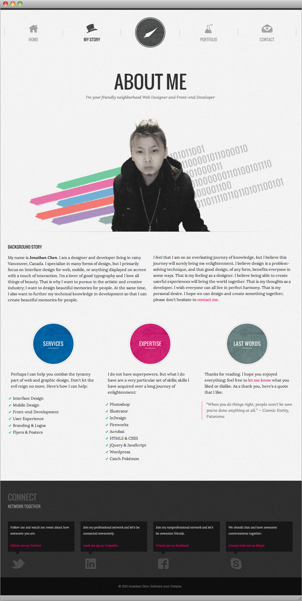
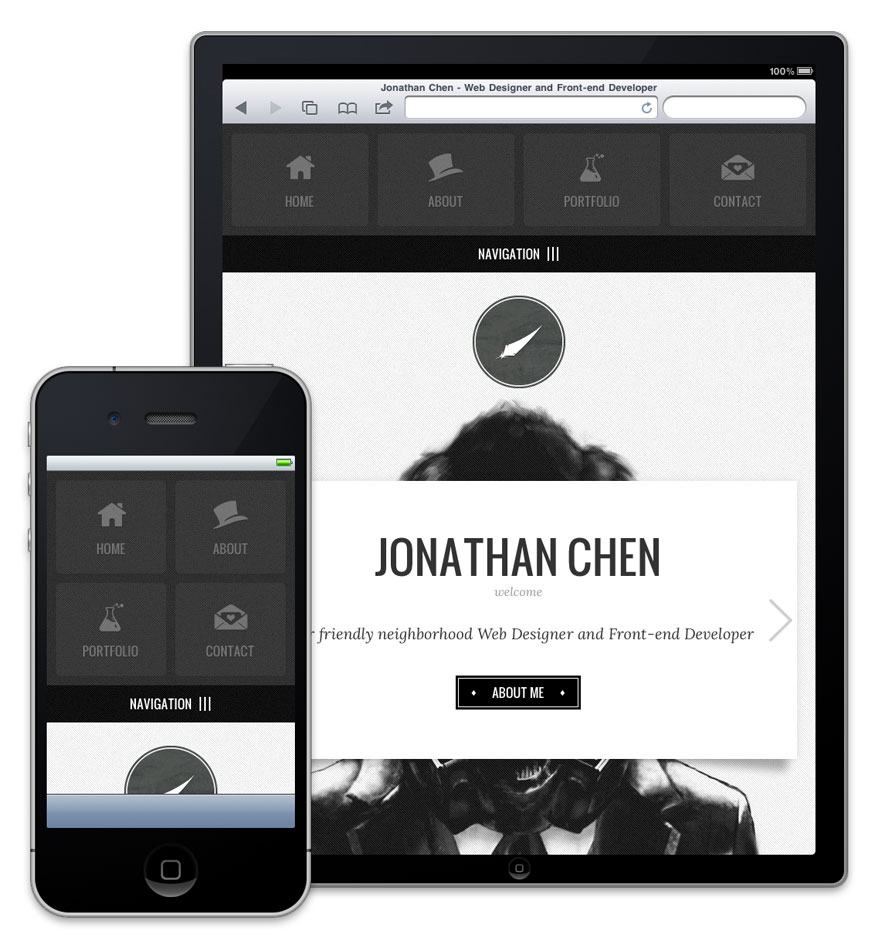
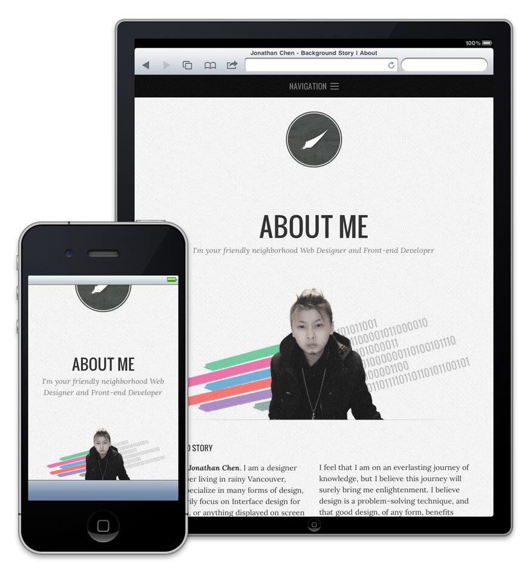

Jonathan Chen v02
You're currently viewing the website details of the website you are viewing.webception? Version 2.0 is a responsive design using the mobile-first approach. This website is optimized for various screen sizes, adjust your browser size to see the difference. Everything handcoded by yours truly.
Back to Showcase




Back to Showcase